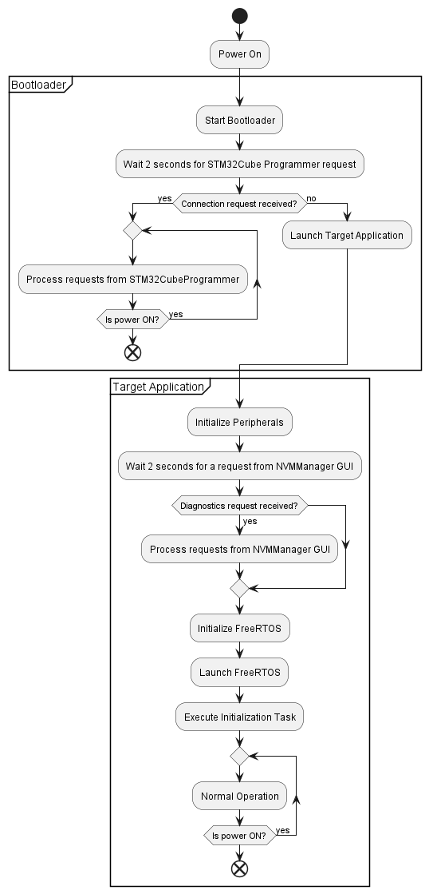
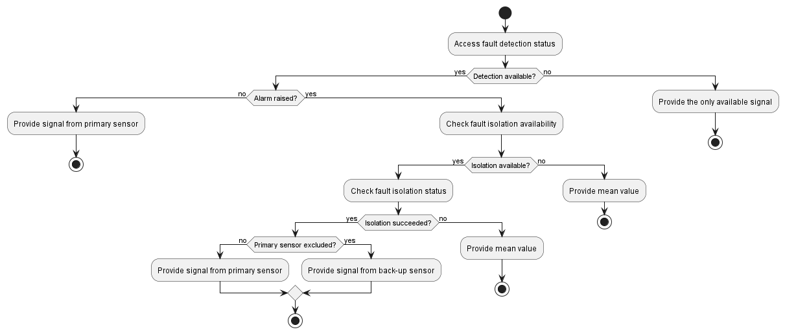

BAHRS software activity diagram

FreeRTOS tasks
Task scheduling and interactions
Signal chain: BAHRS Filter 1
Sequence diagram: BAHRS Filter 1 signal chain
Signal chain: BAHRS Filters 2 and 3
The diagram below shows relevant task interactions for BAHRS Filters 2 and 3.
- For the BAHRS filter 2: assume X=1, Y=2
- For the BAHRS filter 3: assume X=2, Y=3
Sequence diagram: signal chain of the BAHRS Filters 2 and 3
Internal behavior of tasks
Cyclic task (5ms interval)
Activity diagram: 5ms task
Cyclic task (10ms interval)
Activity diagram: 10ms task
Software components
Internal behavior of IMU monitor SWC
Activity diagram of the CImuMonitorSwc::Run() method.
Internal behavior of Barometer monitor SWC
Activity diagram of the CBaroMonitorSwc::Run() method.
Internal behavior of Vertical channel monitor SWC
Activity diagram of the CVerticalChannelMonitorSwc::Run() method.
behavior of Attitude monitor SWC
Activity diagram of the CAttitudeMonitorSwc::Run() method.
FDI activity for an arbitrary scalar signal
